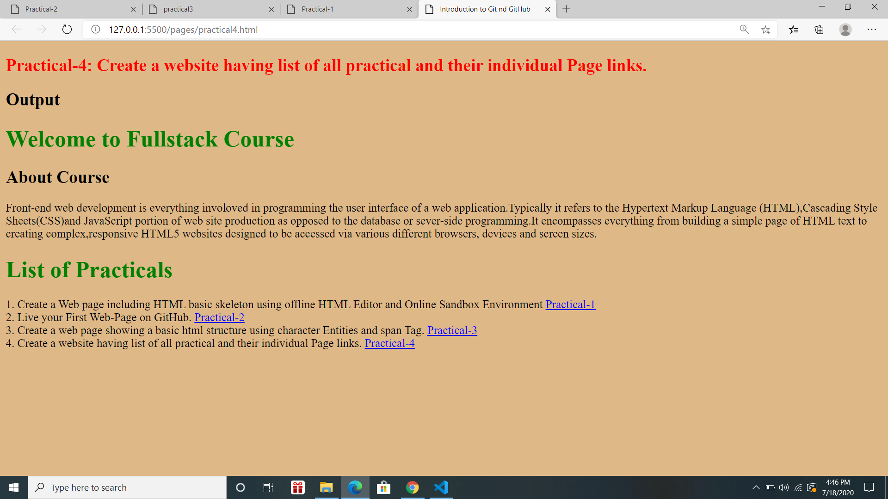

Practical-4: Create a website having list of all practical and their individual Page links.
Output
Welcome to Fullstack Course
About Course
Front-end web development is everything involoved in programming the user interface of a web application.Typically it refers to the Hypertext Markup Language (HTML),Cascading Style Sheets(CSS)and JavaScript portion of web site production as opposed to
the database or sever-side programming.It encompasses everything from building a simple page of HTML text to creating complex,responsive HTML5 websites designed to be accessed via various different browsers, devices and screen sizes.
List of Practicals
1. Create a Web page including HTML basic skeleton using offline HTML Editor and Online Sandbox Environment
Practical-1
2. Live your First Web-Page on GitHub.
Practical-2
3. Create a web page showing a basic html structure using character Entities and span Tag.
Practical-3
4. Create a website having list of all practical and their individual Page links.
Practical-4
Output
Live Page on GitHub
